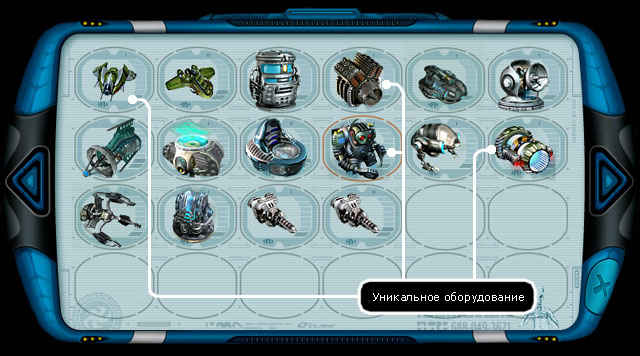
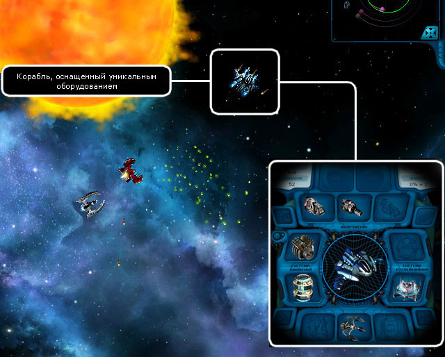

В ходе длительных исследований в лабораториях коалиции было открыто новое уникальное вещество, которое было названо Акрином.
Любое оборудование, прошедшее специальную обработку новым веществом, приобретало уникальные способности, которые здорово повышали летно-технические и боевые характеристики корабля.

Несмотря на то, что вся информация об этом грандиозном открытии ученых коалиции была тщательно засекречена еще на этапе теоретических исследований, отдельные образцы уникального оборудования стали появляться в открытой продаже. А военные и гражданские корабли элитного класса, оснащенные им, стали лакомой добычей пиратов и тех, кто готов был совершить убийство ради шанса, всего лишь только шанса, получить новую красивую железяку, которая могла бы украсить и улучшить корабль злоумышленника, автоматически превращая его в потенциальную жертву более удачливого преступника.
Достаточно быстро осознав последствия дальнейшего сокрытия от обычных людей новинок технического прогресса, на очередном заседании Галактического Совета было принято волевое решение организовать серийное производство подобного уникального оборудования с дальнейшим выпуском его в открытую продажу.

Это постановление коалиции за №726 было встречено всеобщим ликованием со стороны всех, кто имел счастье и удовольствие бороздить космическое пространство.
Однако технологические трудности получения акрина, непредсказуемость результата после воздействия им на обычное оборудование и высокий процент брака, привели к тому, что галактику, находящуюся под ударами доминаторов, захлестнула новая волна насилия. Новинки продаж быстро сметались со стеллажей магазинов. В борьбе за авангард научного прогресса в окружающем пространстве частенько вспыхивали схватки один на один, в которых нередко побеждал третий.

И еще очень долго спрос на уникальное оборудование превышал предложение. А на рейнджеров помимо основной задачи - борьбы с доминаторами, легло бремя поддержания порядка в уцелевших секторах галактики.